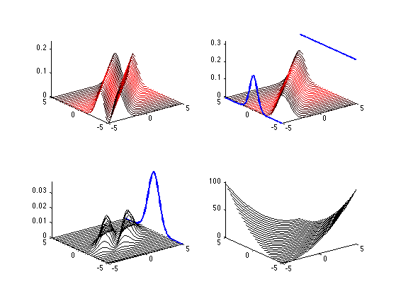
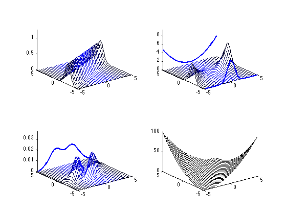

Contents
function bayesRiskDemo()
range = 10;
res = 0.1;
[theta, x_bar] = meshgrid(-range:res:range,-range:res:range);
n = 1
V =[[-0.6561 0.7547 0 -0.0493];
[-0.4436 -0.3856 0.8090 0.0101];
[-0.6106 -0.5308 -0.5878 9.5248];
[ 0 0 0 1.0000]];
V = 3
normpdf = @(val,mean,sd) (1/(2*pi*sd^2))*exp(-(val-mean).^2/(2*sd));
n =
1
V =
3
Frequentist Diagrams
figure;
subplot(2,2,1)
fn = @(theta_ij,x_bar_ij)((theta_ij - (1)*x_bar_ij)^2)*normpdf(x_bar_ij,theta_ij,1/n);
lines3d(theta,x_bar,fn,...
'xcol', @(X)[exp(-(X.^2)/10), 0, 0],...
'ydraw', 0,...
'border',50,...
'axis',[-5 5 -5 5]);
view(V);
subplot(2,2,2)
fn = @(theta_ij,x_bar_ij)normpdf(x_bar_ij,theta_ij,1/n);
lines3d(theta, x_bar, fn,...
'xcol', @(X)[exp(-(X.^2)/10), 0, 0],...
'ydraw', 0,...
'xfunction',@(X)exp(-X.^2)/5, ...
'xsum', 1,...
'border',50,...
'axis',[-5 5 -5 5]);
view(V);
subplot(2,2,3)
fn = @(theta_ij,x_bar_ij)((theta_ij - (1)*x_bar_ij)^2)*normpdf(x_bar_ij,theta_ij,1/n)*normpdf(theta_ij,0,1);
lines3d(theta, x_bar, fn,...
'ydraw', 0,...
'xsum',1,...
'border',50,...
'axis',[-5 5 -5 5]);
view(V);
subplot(2,2,4)
fn = @(theta_ij,x_bar_ij)((theta_ij - (1)*x_bar_ij)^2);
lines3d(theta, x_bar ,fn,...
'ydraw', 0,...
'scale',1,...
'border',50,...
'axis',[-5 5 -5 5]);
view(V);

Bayesian Diagramz
figure
subplot(2,2,1)
fn = @(theta_ij,x_bar_ij)normpdf(theta_ij,n*x_bar_ij/(1+n),1/(1+n));
lines3d(theta,x_bar,fn,...
'ycol', @(X)[0, 0, exp(-(X.^2)/10)],...
'xdraw', 0,...
'border',50,...
'axis',[-5 5 -5 5]);
view(V);
subplot(2,2,2)
fn = @(theta_ij,x_bar_ij)((theta_ij - (1)*x_bar_ij)^2)*normpdf(theta_ij,n*x_bar_ij/(1+n),1/(1+n));
lines3d(theta, x_bar, fn,...
'ycol', @(Y)[0, 0, exp(-((1*Y).^2)/10)],...
'xdraw', 0,...
'yfunction',@(X)5*exp(-(1*X).^2),...
'ysum', 1,...
'border',50,...
'axis',[-5 5 -5 5]);
view(V);
subplot(2,2,3)
fn = @(theta_ij,x_bar_ij)((theta_ij - (1)*x_bar_ij)^2)*normpdf(x_bar_ij,theta_ij,1/n)*normpdf(theta_ij,0,1);
lines3d(theta, x_bar, fn,...
'ycol', @(Y)[0, 0, exp(-((1*Y).^2)/10)],...
'xdraw', 0,...
'ysum', 1,...
'border',50,...
'axis',[-5 5 -5 5]);
view(V);
subplot(2,2,4)
fn = @(theta_ij,x_bar_ij)((theta_ij - (1)*x_bar_ij)^2);
lines3d(theta, x_bar, fn,...
'xdraw', 0,...
'scale',1,...
'border',50,...
'axis',[-5 5 -5 5]);
view(V);

end
function [L] = lines3d( X, Y, f , varargin )
p = inputParser;
p.addOptional('border', 1 );
p.addOptional('xdraw', 1);
p.addOptional('ydraw', 1);
p.addOptional('xcol', @(c)[0, 0, 0] );
p.addOptional('ycol', @(c)[0, 0, 0] );
p.addOptional('yfunction', 0);
p.addOptional('xfunction', 0);
p.addOptional('sumscale', 1/16);
p.addOptional('scale',2);
p.addOptional('xsum',0);
p.addOptional('ysum',0);
p.addOptional('axis',[]);
p.parse(varargin{:});
p.Results;
[n,m] = size(X);
L = zeros(n,m);
for i = 1:n
for j = 1:m
L(i,j) = f(X(i,j),Y(i,j));
end
end
sumXY = sum(L);
sumYX = sum(L,2)';
k = p.Results.border;
L = L(k:end-k,k:end-k);
X = X(k:end-k,k:end-k);
Y = Y(k:end-k,k:end-k);
sumXY = sumXY(k:end-k);
sumYX = sumYX(k:end-k);
hold on
grid off
if ~isempty(p.Results.axis)
axis([p.Results.axis,...
0 p.Results.scale*max(max(L))])
end
[n,] = size(X);
xcol = p.Results.xcol;
ycol = p.Results.ycol;
for i = fliplr(1:4:n)
if p.Results.xdraw
color = xcol(X(1,i));
plot3(Y(:,i), X(:,i), L(:,i),'Color',color,'LineWidth',1)
end
if p.Results.ydraw
color = ycol(Y(i,1));
plot3(X(:,i), Y(:,i), L(i,:),'Color',color,'LineWidth',1)
end
end
sumscale = p.Results.sumscale;
if p.Results.xsum
plot3(X(:,end), Y(:,1), sumXY*sumscale ,'b','LineWidth',2);
end
if p.Results.ysum
plot3(Y(:,1), X(:,end), sumYX*sumscale ,'b','LineWidth',2);
end
if strcmp(class(p.Results.yfunction), 'function_handle')
frontf = p.Results.yfunction;
plot3(Y(:,1), X(:,1), frontf(Y(:,1)),'b','LineWidth',2);
end
if strcmp(class(p.Results.xfunction), 'function_handle')
sidef = p.Results.xfunction;
plot3(X(:,1), Y(:,1), sidef(X(1,:)),'b','LineWidth',2);
end
end